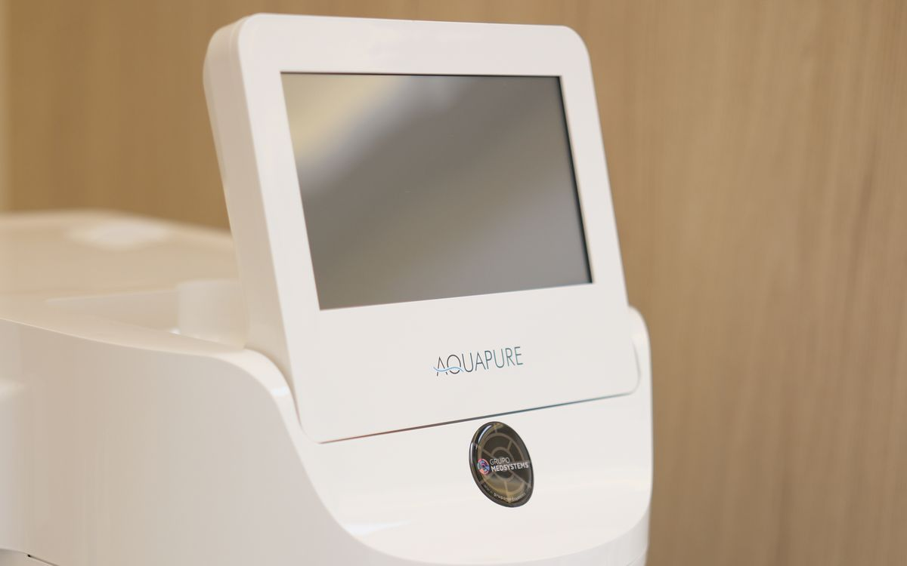
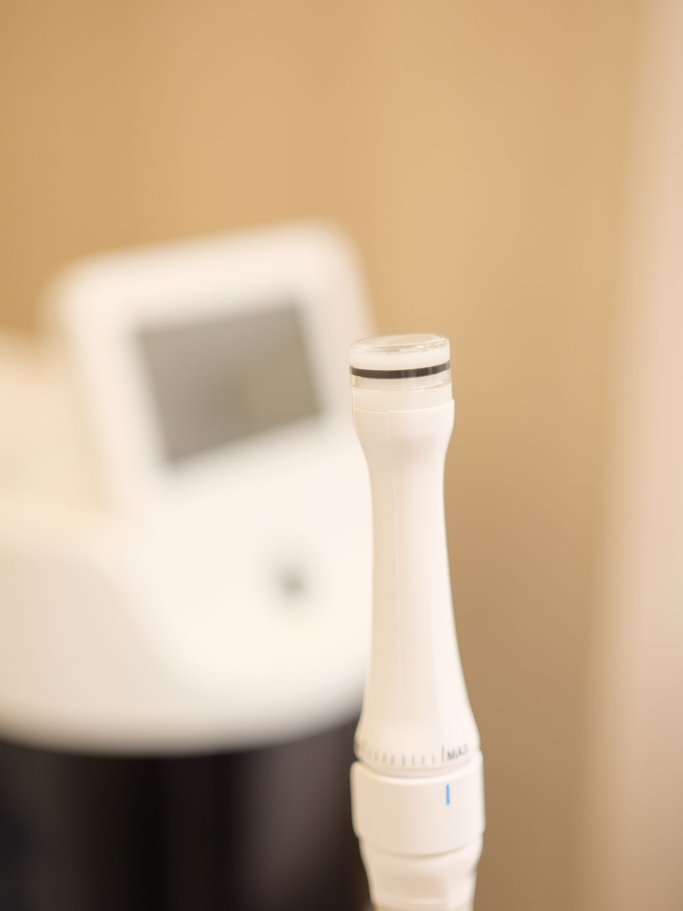
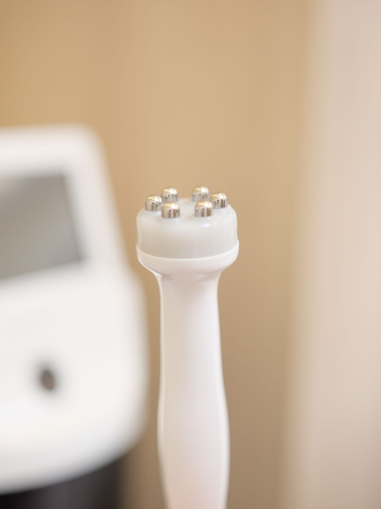
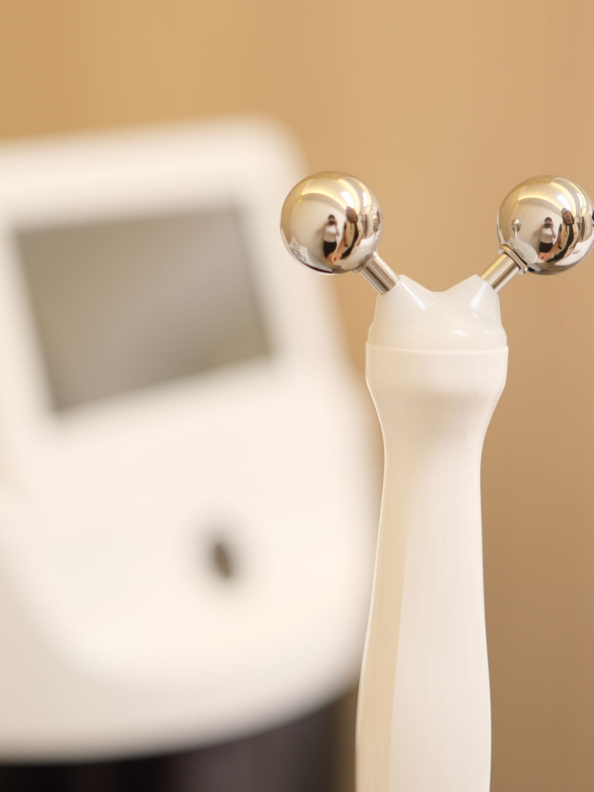
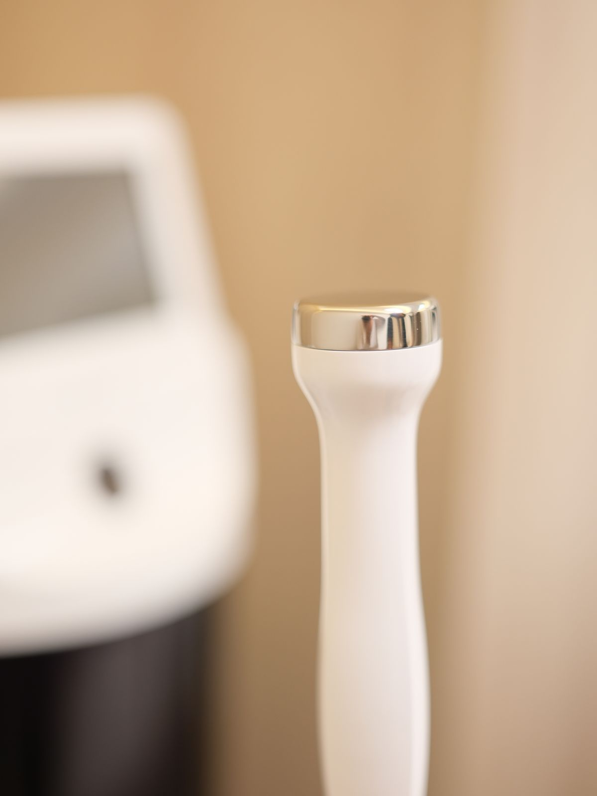

Guia Camelie · Aquapure
Aquapure
Limpa, infunde, levanta e sela. Quatro etapas numa só sessão, cada uma com a sua ponteira.
- Duração
- cerca de1 hora
- Etapas
- numa sessão4 ponteiras
- Frequência
- a cada3 meses
- Recuperação
- por volta de1 a 2 dias
O que é
O Aquapure é um procedimento de higienização e hidratação conduzido com aparelho: esfoliação suave, limpeza profunda dos poros e infusão de ativos, sem extração mecânica. É uma opção confortável como alternativa ou complemento à limpeza de pele manual. Na Camelie, é realizado pela equipe técnica, sob responsabilidade das dermatologistas da clínica.

Como funciona
Cada etapa faz uma coisa, na ordem certa, numa mesma sessão.

AquaPeel
Esfolia, remove células mortas, cravos e impurezas e hidrata ao mesmo tempo. Já nesse primeiro passo, a pele costuma ficar mais limpa, lisa e iluminada.

Eletroporação
Leva os ativos para dentro da pele. Ácido hialurônico, peptídeos e antioxidantes alcançam camadas mais profundas, de forma confortável.

Microcorrentes
Estimulam a musculatura do rosto, ajudam a definir o contorno e a devolver firmeza, com um olhar mais descansado e um rosto mais sustentado.

Resfriamento e aquecimento
Frio e calor alternados selam as etapas anteriores e acalmam a pele, que costuma ficar com aspecto descansado e viçoso.
O que esperar
A pele costuma sair luminosa e mais leve já na mesma sessão. Vermelhidão discreta e sensibilidade passageira podem aparecer e costumam desaparecer em 1 a 2 dias. É um cuidado de qualidade de pele e manutenção; quando há cravos em maior quantidade, a limpeza manual segue sendo o caminho, e a avaliação define a melhor combinação.
O Aquapure entra no lugar certo de um plano. Na avaliação, a dermatologista define se ele soma sozinho ou junto da limpeza manual.
Cuidados
Antes da sessão
- Informe uso de ácidos, retinoides ou isotretinoína.
- Evite sol intenso nas 48 horas anteriores.
- Chegue com a pele limpa, sem maquiagem quando possível.
Depois da sessão
- Protetor solar FPS 50 ou maior, toque seco, ao longo do dia.
- Evite sol direto, ácidos e peelings por 7 dias.
- Hidratante calmante e leve; não manipular a área.
Depois da sessão, você recebe as orientações completas de cuidado.
Bom saber
Pequenas marcas ou vermelhidão temporárias podem aparecer; para eventos importantes, o ideal é agendar com 3 a 5 dias de distância.
Pode ser combinado com a limpeza de pele manual na mesma sessão; a limpeza vem primeiro, o Aquapure depois.
Algumas condições pedem avaliação prévia, como gestação e amamentação, infecções ou feridas na área, dermatites em atividade, alergia aos ativos e marcapasso ou implantes metálicos na face.
O começo é sempre uma avaliação. Nela, entendemos a sua pele e definimos o que faz sentido, e em que ordem.
Para agendar ou tirar dúvidas, é só continuar a conversa por aqui no WhatsApp.
Continuar no WhatsApp